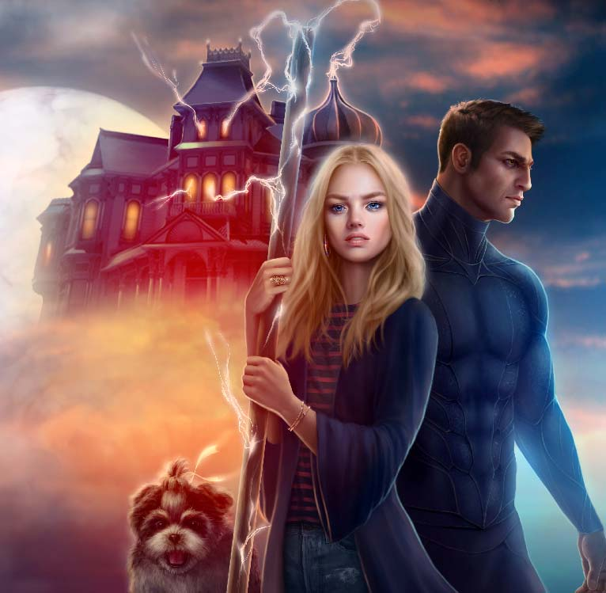
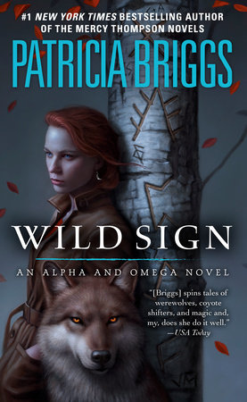
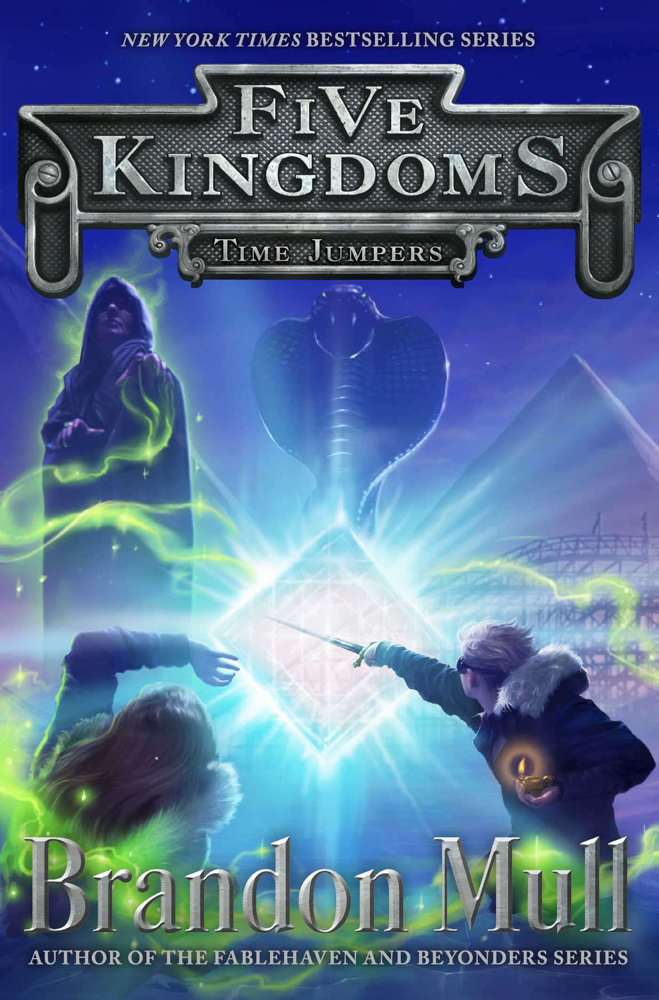
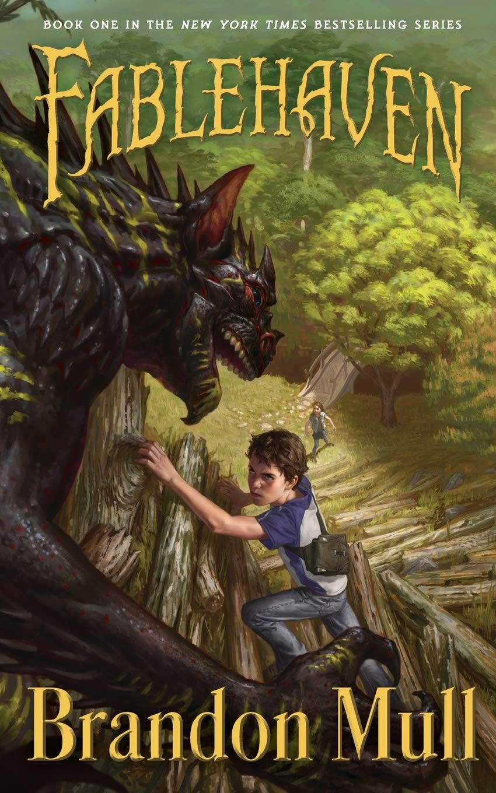
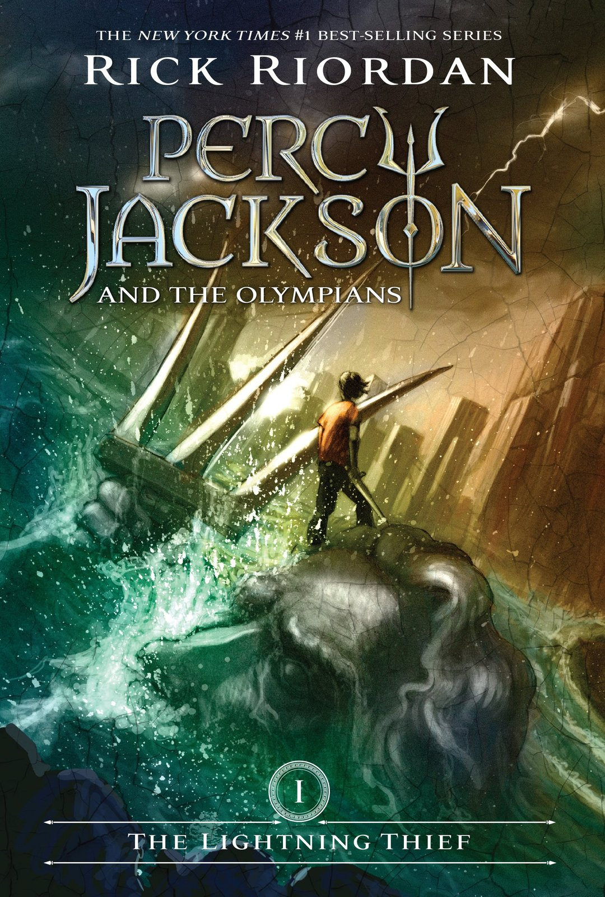
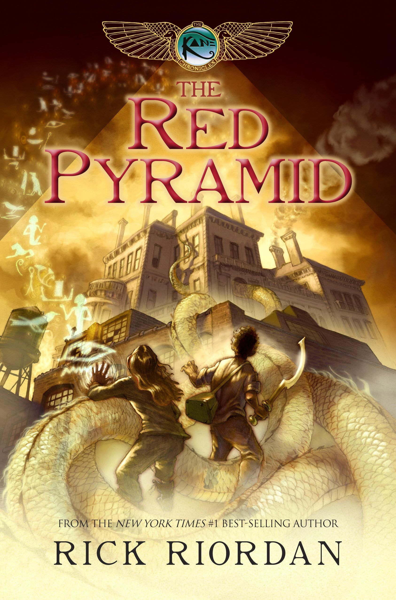
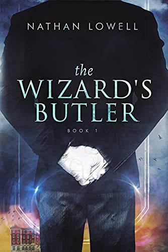
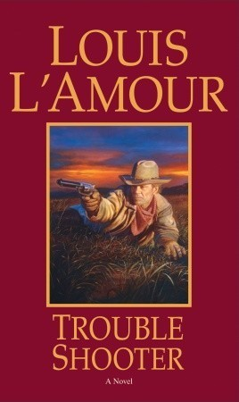
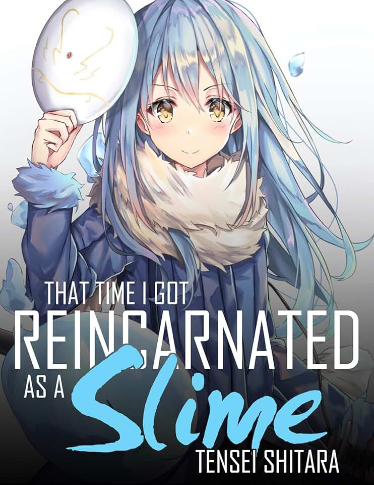

Authors
Series

Innkeeper Chronicles
Innkeeper Chronicles
Urban Fantasy / Sci-Fi
Dina Demille runs magical B&B Gertrude Hunt serving interstellar guests: aliens, vampires, werewolves. Her broom's a weapon, Shih Tzu Beast is a monster, inn defies physics. Neutral ground where cosmic threats clash.

Alpha and Omega
Alpha and Omega
Urban Fantasy
Companion to Mercy Thompson. Omega werewolf Anna Latham calms packs; mates Charles Cornick, enforcer son of werewolf Marrok. Face fae wars, rogue wolves, witchborn magic in Tri-Cities.
Mercy Thompson
Mercy Thompson
Urban Fantasy
Coyote shifter/VW mechanic Mercy navigates werewolf politics, vampire courts, fae intrigue in Tri-Cities WA. Walker heritage makes her Triad with Alpha Adam, mage Samuel.
Kate Daniels
Kate Daniels
Urban Fantasy
Mercenary Kate Daniels wields sword in magic-tech wave-ravaged Atlanta. Battles shapeshifters, necromancers, gods amid Pack politics, Beast Lord Curran romance.

Five Kingdoms
Five Kingdoms
YA Fantasy Adventure
Kid Cole Randolph abducted to magical Outskirts. Sky Raiders loot floating castles beyond Brink of Five Kingdoms. Unites friends against looming battle for world control.

Fablehaven
Fablehaven
YA Fantasy
Siblings Kendra & Seth discover grandparents' preserve for magical creatures: fairies, witches, demons. Defend from Muriel witch, Society of the Evening Star.

Percy Jackson
Percy Jackson & the Olympians
Mythological Fantasy
ADHD/dyslexic demigod Percy Jackson (Poseidon son) quests at Camp Half-Blood. Battles Titans, retrieves Zeus bolt, Luke betrayal. Modern Greek gods among us.

The Kane Chronicles
The Kane Chronicles
Egyptian Mythology Fantasy
Siblings Carter & Sadie Kane (Pharaoh descendants) unleash Egyptian gods/magic accidentally. Host gods, battle Set chaos god as magicians.
Jack Ryan
Jack Ryan
Techno-Thriller
CIA analyst Jack Ryan uncovers Soviet defections, Red October submarine, terror plots. Wall Street trader to President fighting global threats.
The Lunar Chronicles
The Lunar Chronicles
Sci-Fi Fairy Tale Retelling
Marissa Meyer's 4-book series retells Cinderella, Little Red Riding Hood, Rapunzel as cyborgs/androids in futuristic Earth vs. Lunar tyranny. Cinder (cyborg mechanic), Scarlet (Red Riding Hood pilot), Cress (hacker), Winter (princess) unite against Queen Levana.
Books

The Wizard's Butler
The Wizard's Butler
Urban Fantasy
Unemployed Tavistock Reeves becomes butler to reclusive wizard Grindletop. Discovers hidden magical underworld beneath modern London. Manages mansion, wards off magical threats, uncovers wizard's secrets. Cozy fantasy with fish-out-of-water humor & British charm by Nathan Lowell.
Spy vs. Spy
Spy vs. Spy
Wordless Comic Strip
MAD Magazine's iconic wordless strip by Antonio Prohías (1961-1981). Black Spy vs. White Spy wage endless comical espionage war with booby traps, gadgets, explosions. Beak-headed rivals in hats & suits - timeless slapstick rivalry. Collected in comic books.

Trouble Shooter
Trouble Shooter
Western
Louis L'Amour's 1987 novel. Drifter Hopalong Cassidy-style hero Valle Torres kills rancher Brink's son in self-defense. Hunted across New Mexico Territory, builds new life while evading vengeance. Classic L'Amour morality tale of frontier justice.

That Time I Got Reincarnated as a Slime
Tensei Shitara Slime Datta Ken
Isekai Fantasy Manga/LN
Salaryman Satoru Mikami reincarnates as slime Rimuru Tempest in fantasy world. Absorbs abilities, builds monster nation Tempest, allies dragons/demons. Peaceful nation-builder isekai juggernaut by Fuse. Manga, LN, hit anime (2018+).